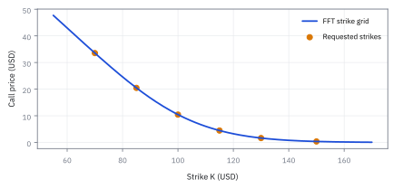
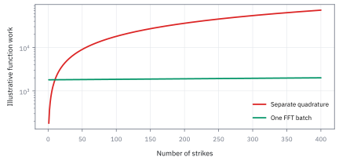
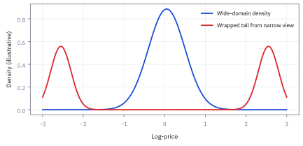

21.3 Fourier and FFT Pricing
แบบจำลองที่ไม่มีสูตรของ density มักมีสูตรของ characteristic function หน่วงราคา call ให้แปลง Fourier ได้ แล้วกลับเป็นราคาด้วยผลรวมเดียว ซึ่ง FFT คำนวณให้ทุก strike พร้อมกัน
calibration ของ 21.2 ต้องการราคา call ของ Heston หลาย strike ทุกครั้งที่อัลกอริทึมขยับ วิธีของ 14.7 ใช้ characteristic function 6,002 ครั้งต่อ strike (สองอินทิกรัล อินทิกรัลละ 3,001 จุด) smile เจ็ด strike จึงใช้ 42,014 ครั้ง เพื่อนเขียนเครื่องตั้งราคาแบบ Fourier ที่ได้ทุก strike พร้อมกัน แล้วทดสอบกับ call ที่รู้คำตอบ (หุ้น \$100 strike \$80 อายุ 1 ปี ดอกเบี้ย 5% ปันผล 1% ความผันผวน 30% ราคา Black–Scholes \$25.6146) ตั้งค่าหน่วง $\alpha=0.01$ ได้ 372.11 ตั้ง $\alpha=10$ บนกริด 64 จุดได้ 9.06 เขาสรุปว่าวิธีนี้ใช้ไม่ได้ ถูกไหม?
ลองตอบก่อนเปิดเฉลย
ไม่ถูก ผิดที่ค่าที่ตั้ง ไม่ใช่วิธี $\alpha=0.01$ สร้างยอดสูง 10,273 ที่แคบราว 0.01 ตรงความถี่ศูนย์ ซึ่งกริดที่ห่าง 0.25 มองไม่เห็นรูป ส่วน $\alpha=10$ บนกริด 64 จุดที่ห่าง 0.1 ตัดอินทิกรัลที่ความถี่ 6.3 ขณะที่ integrand ยังมีขนาด 12% ของยอด ที่ $\alpha=1.5$ ระยะความถี่ 0.25 และ 4,096 จุด ได้ \$25.6146 ตรงสูตร และ FFT ครั้งเดียวให้ 4,096 strike จาก characteristic function 4,096 ครั้ง smile ของ 14.7 ออกมาตรงทุกตัว ใช้งานน้อยกว่า 42,014 ครั้งราวสิบเท่า
สิ่งที่เราจะสร้าง
14.2 ตั้งราคา call เป็นค่าเฉลี่ยคิดลดของ payoff ถ่วงด้วย density ของราคาปลายทาง วิธีนี้ใช้ได้เมื่อเขียน density ได้ แต่ Heston ของ 14.7 เขียนไม่ได้ สิ่งที่ Heston ให้คือ characteristic function ซึ่ง 14.7 แปลงกลับเป็นราคาทีละ strike ด้วยสองอินทิกรัล หน้านี้สร้างทางที่เร็วกว่า
ลำดับคือ ตั้งราคาด้วย density ตรง ๆ ก่อนเพื่อมีคำตอบไว้เทียบ นิยาม characteristic function หาของ Black–Scholes ดูว่าทำไมต้องหน่วงราคา call ก่อนแปลง Fourier สร้าง transform ของ Carr–Madan กลับเป็นราคาด้วยผลรวมเดียว เปลี่ยนผลรวมเป็น FFT ที่ให้ทุก strike อธิบายตารางค่าที่ตั้งและ aliasing แล้วใช้โค้ดเดียวกันกับ Heston และ Variance Gamma จบที่ smile ของ 14.7 จาก FFT ครั้งเดียว
ศัพท์ที่ใช้ในหัวข้อนี้
- Characteristic function
- ค่าเฉลี่ย $\mathbb E[e^{iux}]$ ของตัวแปรสุ่ม $x$ ที่ทุกความถี่ $u$ มันเก็บการแจกแจงทั้งหมดไว้ ใช้แทน density กับแบบจำลองที่เขียน density ไม่ได้แต่เขียนตัวนี้ได้ เช่น Heston
- Fourier transform
- การเขียนฟังก์ชันเป็นผลรวมของคลื่นทุกความถี่ และการแปลงกลับคือการรวมคลื่นเหล่านั้นคืนเป็นฟังก์ชัน ใช้ย้ายการคำนวณราคาไปทำในโลกของความถี่ที่มีสูตรให้
- Damping ($\alpha$)
- การคูณราคา call ด้วย $e^{\alpha k}$ ก่อนแปลง ใช้เพราะราคา call ไม่ลดเป็นศูนย์เมื่อ strike เข้าใกล้ศูนย์ ถ้าไม่หน่วงอินทิกรัลของการแปลงจะไม่มีค่า
- Carr–Madan transform
- สูตรที่เขียน Fourier transform ของราคา call ที่หน่วงแล้วด้วย characteristic function ของ $\ln S_T$ ใช้ตั้งราคา call จากแบบจำลองใดก็ได้ที่รู้ characteristic function
- FFT
- Fast Fourier Transform อัลกอริทึมที่คำนวณผลรวมแบบ Fourier ของ $N$ จุดสำหรับทุกผลลัพธ์พร้อมกันด้วยงานราว $N\log_2N$ แทน $N^2$ ใช้ได้ราคาทุก strike ในการคำนวณครั้งเดียว
- Aliasing
- ความคลาดเคลื่อนที่เกิดเพราะผลรวมบนกริดความถี่ที่ห่างกัน $\eta$ มองฟังก์ชันของ log-strike เป็นของที่วนซ้ำทุกช่วง $2\pi/\eta$ ถ้าช่วงสั้นเกิน หางของฟังก์ชันจะวนมาทับตัวเอง
สัญลักษณ์และหน่วย
| สัญลักษณ์ | ความหมาย | หน่วย |
|---|---|---|
| $S_0,\ K,\ T$ | ราคาหุ้นวันนี้ strike และอายุ | USD, USD, ปี |
| $r,\ q,\ \sigma$ | ดอกเบี้ย อัตราปันผลต่อเนื่อง และความผันผวน | ต่อปี, ต่อปี, ต่อรากที่สองของปี |
| $x_T=\ln S_T,\ k=\ln K$ | log ของราคาปลายทาง และ log-strike | ไม่มีหน่วย |
| $\varphi(u)$ | characteristic function ของ $x_T$ ภายใต้ $\mathbb Q$ | ไม่มีหน่วย |
| $u$ | ความถี่ (จำนวนจริง หรือเชิงซ้อนเมื่อเลื่อนลงในแกนจินตภาพ) | ต่อหน่วยของ $k$ |
| $C(k),\ c(k)$ | ราคา call ที่ strike $e^k$ และราคาที่หน่วงแล้ว $e^{\alpha k}C(k)$ | USD |
| $\alpha,\ \psi(u)$ | ค่าหน่วง และ Fourier transform ของ $c(k)$ | ไม่มีหน่วย, USD |
| $\eta,\ N$ | ระยะห่างของกริดความถี่ และจำนวนจุด | ต่อหน่วยของ $k$, ไม่มีหน่วย |
| $\lambda,\ k_0$ | ระยะห่างของกริด log-strike และ log-strike ตัวแรก | ไม่มีหน่วย |
ขั้นที่ 1 — ราคาคือพื้นที่ใต้ payoff คูณ density แล้วคิดลด
เริ่มจากวิธีที่รู้อยู่แล้วเพื่อมีคำตอบไว้เทียบ ภายใต้ $\mathbb Q$ ของ 14.2 ราคา call คือค่าเฉลี่ยคิดลดของ payoff: คูณ payoff กับ density ของราคาปลายทาง แล้วหาพื้นที่ สำหรับ Black–Scholes density คือ lognormal ของ 1.10 ใช้กรณีทดสอบของหน้านี้ ($S_0=100$, $K=80$, $T=1$, $r=5\%$, $q=1\%$, $\sigma=30\%$) และแท่งสี่เหลี่ยมคางหมูกว้าง 0.2 จำนวน 4,096 แท่งเริ่มที่ strike
payoff เป็นศูนย์เมื่อหุ้นจบต่ำกว่า strike อินทิกรัลจึงเริ่มที่ $K$ ค่า $-0.005$ มาจาก $0.05-0.01-\tfrac12(0.09)$ แท่งแรกอยู่ที่ strike พอดีจึงนับครึ่งแท่งตามกฎสี่เหลี่ยมคางหมู แท่งสุดท้ายอยู่ที่ราว \$899 ซึ่ง density แทบเป็นศูนย์ ผลต่างจากสูตรของ 14.2 ($d_1=1.027145$, $d_2=0.727145$) คือ 0.00004 ซึ่งมาจากความกว้างของแท่ง
วิธีนี้ตรงไปตรงมาและแม่น ปัญหาเดียวคือต้องมีสูตรของ $f$ Heston ของ 14.7 ไม่มี ขั้นต่อไปจึงย้ายไปใช้ของที่ Heston มี
ขั้นที่ 2 — characteristic function: ค่าเฉลี่ยของจุดบนวงกลม
ลองของเล่นที่แยกจากแบบจำลองราคาหุ้นก่อน: สุ่มได้ $X=0$ หรือ $X=1$ อย่างละครึ่ง ที่ความถี่ $u=0$ ทั้งสองผลชี้ไปทางขวาของวงกลม; ที่ $u=\pi$ ผล 0 ชี้ขวา แต่ผล 1 ชี้ซ้าย น้ำหนักบวกเท่ากันจึงหักล้างกันได้ จากนั้นค่อยใช้ characteristic function ของ $x_T=\ln S_T$ กับ Black–Scholes โดยจัดกำลังสองสมบูรณ์แบบเดียวกับ 8.5
ของเล่น $X=0$ หรือ $1$: จุดบนวงกลมที่ $u=\pi$
| ความถี่ | ผล $X=0$ (โอกาส 1/2) | ผล $X=1$ (โอกาส 1/2) | ค่าเฉลี่ยถ่วงน้ำหนัก |
|---|---|---|---|
| $u=0$ | $+1$ | $+1$ | $\tfrac12(+1)+\tfrac12(+1)=1$ |
| $u=\pi$ | $+1$ | $-1$ | $\tfrac12(+1)+\tfrac12(-1)=0$ |
ทั้งสองผลยังมีโอกาส $1/2$ เท่าเดิม แม้ค่าเฉลี่ยที่ $u=\pi$ เป็นศูนย์: ศูนย์หมายถึงทิศทางเชิงซ้อนหักล้างกัน ไม่ใช่โอกาสเป็นศูนย์ เมื่อ $u=0$ ไม่มีการหมุนเลยจึงรวมได้ 1
นี่คือภาพของ $\varphi_{01}(0)=1$ และ $\varphi_{01}(\pi)=0$ ก่อนเรียกค่าเฉลี่ยของ $e^{iuX}$ ว่า characteristic function ขนาดของค่าเฉลี่ยจุดบนวงกลมจึงไม่เกินหนึ่ง ต่างจาก moment generating function ที่บางการแจกแจงไม่มีค่า
ค่าที่ทุก $u$ ร่วมกันบอกการแจกแจงได้ครบ แต่ตารางนี้เป็นเพียงตัวแปร 0/1 ไม่ใช่ราคา Black–Scholes หรือ Heston
บรรทัดที่ห้าใช้ผลของ 8.5 ว่า $\mathbb E[e^{tZ}]=e^{t^2/2}$ กับ $t=iu\sigma\sqrt T$ ซึ่งการจัดกำลังสองยังใช้ได้กับ $t$ เชิงซ้อน ได้ $t^2=-u^2\sigma^2T$ ส่วนจริงที่ติดลบคือตัวที่ทำให้คลื่นเล็กลงเมื่อความถี่สูง การตรวจที่ใช้ได้กับทุกแบบจำลองคือ $\varphi(0)=1$ และ $\varphi(-i)=\mathbb E[S_T]$ ซึ่งต้องเท่ากับ forward $100e^{0.04}=104.0811$
Figure 21.3a — characteristic function ของ Black–Scholes เป็นคลื่นที่หดลงเร็ว

ขั้นที่ 3 — ทำไมต้องหน่วงราคา call ก่อนแปลง
อยากเขียนราคา call เป็นฟังก์ชันของ log-strike $k$ แล้วแปลง Fourier ทั้งเส้น แต่การแปลงต้องการให้ฟังก์ชันลดเป็นศูนย์ทั้งสองปลาย ราคา call ลดเป็นศูนย์เมื่อ strike สูงมาก แต่เมื่อ strike เข้าใกล้ศูนย์ ($k\to-\infty$) ราคาเข้าหา $S_0e^{-qT}$ ไม่ใช่ศูนย์ ทางแก้คือคูณด้วย $e^{\alpha k}$ ซึ่งเล็กลงเร็วเมื่อ $k$ ติดลบ
ที่ strike \$1 call ยังมีค่า 98.054 เกือบเท่าหุ้น ถ้าไม่หน่วง พื้นที่ใต้ $C(k)$ ทางซ้ายยาวไม่สิ้นสุด ที่ $\alpha=1.5$ และ $k=-5$ (strike \$0.0067) ค่าที่หน่วงแล้วเหลือ 0.0548 และหดต่อตาม $e^{1.5k}$
ทางขวา $e^{\alpha k}$ โตขึ้น จึงต้องให้ $C(k)$ ลดเร็วกว่า เงื่อนไขนั้นคือบรรทัดสุดท้าย: moment ลำดับ $\alpha+1$ ของหุ้นต้องมีค่า แบบจำลองที่หางอ้วนมีขีดจำกัดของ $\alpha$ ส่วน Black–Scholes ไม่มี
ขั้นที่ 4 — transform ของ Carr–Madan: สลับลำดับอินทิกรัลแล้วคิดข้างในได้เอง
หา Fourier transform ของ $c(k)$ โดยแทนราคา call ด้วยนิยามของขั้นที่ 1 ในรูปของ $x=\ln s$ แล้วสลับว่าจะอินทิเกรตตาม $k$ หรือตาม $x$ ก่อน ตรึงราคาปลายทาง $x$ ไว้ call จ่ายเฉพาะ strike ที่ต่ำกว่า $e^x$ อินทิกรัลข้างในจึงวิ่งจาก $-\infty$ ถึง $x$ และมีคำตอบปิด
$I(x)$ คือส่วนที่เหลือของ $\psi$ เมื่อตรึงราคาปลายทางไว้ที่ $x$ มันคืออินทิกรัลของ exponential สองตัว: $\int e^{zk}e^x\,dk=e^xe^{zk}/z$ และ $\int e^{(z+1)k}dk=e^{(z+1)k}/(z+1)$ ปลายล่างหายไปเพราะ $\alpha\gt0$ ทำให้ $e^{zk}\to0$ เมื่อ $k\to-\infty$ นี่คือหน้าที่ของการหน่วงในภาษาของสูตร รวมสองก้อนได้ $1/z-1/(z+1)=1/(z(z+1))$
บรรทัดสุดท้ายคือกลเม็ดหลัก: $e^{(z+1)x}=e^{i(u-(\alpha+1)i)x}$ ค่าเฉลี่ยของมันจึงคือ characteristic function ที่ความถี่เลื่อนลงไปในแกนจินตภาพ $\alpha+1$ หน่วย ถ้ารู้ $\varphi$ ก็รู้ $\psi$ ทุกความถี่ ไม่ต้องรู้ density เลย สลับลำดับอินทิกรัลได้เพราะ moment ของขั้นที่ 3 มีค่า
ขั้นที่ 5 — กลับเป็นราคา: ครึ่งแกนบวก และผลรวมสี่เหลี่ยมคางหมู
ตอนนี้มี $\psi$ แล้ว ต้องแปลงกลับเป็น $c(k)$ แล้วหารการหน่วงออก เพราะ $c(k)$ เป็นจำนวนจริง ค่าที่ความถี่ $-u$ คือ conjugate ของค่าที่ $u$ อินทิกรัลทั้งเส้นจึงเหลือสองเท่าของส่วนจริงบนครึ่งแกนบวก แล้วแทนอินทิกรัลด้วยผลรวมบนกริด $u_j=j\eta$
$F$ คือสิ่งที่ต้องอินทิเกรต สองบรรทัดแรกบอกว่าค่าที่ $-u$ คือ conjugate ของค่าที่ $u$ เพราะ $c(k)$ เป็นจำนวนจริง บรรทัดที่สามคือการแปลงกลับของ Fourier ตามนิยามที่มี $1/(2\pi)$ อยู่ข้างหน้า บรรทัดที่สี่รวมครึ่งซ้ายกับครึ่งขวา: จำนวนเชิงซ้อนบวก conjugate ของมันได้สองเท่าของส่วนจริง สองตัดกับ $2\pi$ เหลือ $\pi$
จุดแรก $u_0=0$ ได้น้ำหนักครึ่งหนึ่งเพราะเป็นขอบของช่วงตามกฎสี่เหลี่ยมคางหมู
กรณีทดสอบได้ 25.614621 เท่ากับสูตรของ Black–Scholes ทุกหลักที่พิมพ์ และแม่นกว่าแท่ง density ของขั้นที่ 1 โดยใช้ characteristic function เพียง 1,024 ครั้ง ความถี่ไปถึง $1{,}023(0.25)=255.75$ ไกลเกินที่คลื่นยังมีขนาด
ขั้นที่ 6 — จากหนึ่ง strike เป็นทั้งแถว: เลือกกริดให้ผลรวมกลายเป็น FFT
ถ้าต้องการหลาย strike ผลรวมของขั้นที่ 5 ต้องทำใหม่ทุก strike ถ้าวาง log-strike เป็นกริด $k_m=k_0+m\lambda$ และเลือก $\lambda\eta=2\pi/N$ ตัวคูณ $e^{-iu_jk_m}$ จะแยกเป็นส่วนที่ขึ้นกับ $j$ อย่างเดียวคูณกับ $e^{-2\pi ijm/N}$ ซึ่งเป็นรูปของ discrete Fourier transform ที่ FFT คำนวณให้ทุก $m$ พร้อมกัน
บรรทัดแรกคือจุดที่ต้องเลือก: ถ้า $\eta\lambda=2\pi/N$ พจน์ที่สองเป็นมุมของ DFT พอดี ผลคือราคา 4,096 strike จาก characteristic function 4,096 ครั้งกับ FFT หนึ่งครั้ง ซึ่งใช้การคูณบวกราว $N\log_2N=49{,}152$ ครั้ง เทียบกับ $N^2=16.8$ ล้านครั้งถ้าบวกตรง ๆ
ราคาที่ต้องจ่ายคือสองกริดผูกกัน: อยากได้ความถี่ละเอียด ($\eta$ เล็ก) strike จะห่าง ที่นี่ $\lambda=0.006136$ คือ strike ห่างกันราว 0.61% กริดทั้งแถวกว้าง $N\lambda=25.1$ ในหน่วย log-strike
วางกริดได้สองแบบ: ให้ strike วันนี้อยู่กลางแถว ($k_0=\ln100-N\lambda/2=\ln100-12.566$ จุดที่ 2,048 จึงเป็น strike 100 พอดี) หรือให้ strike ที่สนใจเป็นตัวแรก ($k_0=\ln80$ ตัวถัดไปคือ $80e^{\lambda}=80.49$) แบบแรกกับ Black–Scholes $\sigma=20\%$ ($S_0=100$, $r=5\%$, $q=0$) ได้ 10.450584 ที่จุด 2,048 เท่ากับสูตร ($d_1=0.35$, $d_2=0.15$) strike ที่ไม่อยู่บนกริดใช้ interpolation แบบลูกบาศก์ใน $k$ จากสี่จุดรอบ ๆ ที่ strike 70, 85, 115, 130 และ 150 พลาดจากสูตรไม่เกิน $10^{-7}$
Figure 21.3b — ราคา call ทั้งแถวของ strike

Figure 21.3c — งานต่อ strike เทียบงานต่อหนึ่งแถว (ภาพประกอบ)

ขั้นที่ 7 — ตารางของค่าที่ตั้ง: $\alpha$, $\eta$ และ $N$
โจทย์ให้อะไรมาบ้าง: กรณีทดสอบ ($K=80$, $\sigma=30\%$, $q=1\%$) คำตอบคือ 25.6146 คำนวณผลรวมของขั้นที่ 5 ที่ strike นี้ด้วย $\alpha$ เจ็ดค่า กับกริดสี่แบบ ($\eta=0.1$ หรือ 0.25 และ $N=64$ หรือ 1,024) ตารางนี้ตรงกับตารางที่ใช้สอนเรื่องนี้กันทุกตัวเลข
| $\alpha$ | 0.1, 64 | 0.1, 1,024 | 0.25, 64 | 0.25, 1,024 |
|---|---|---|---|---|
| 0.01 | 138.7372 | 138.8336 | 372.1118 | 372.1118 |
| 0.5 | 25.4710 | 25.6146 | 25.6150 | 25.6150 |
| 1 | 25.4432 | 25.6146 | 25.6146 | 25.6146 |
| 1.5 | 25.4497 | 25.6146 | 25.6146 | 25.6146 |
| 2 | 25.5024 | 25.6146 | 25.6146 | 25.6146 |
| 5 | 26.4853 | 25.6146 | 25.6146 | 25.6146 |
| 10 | 9.0641 | 25.6146 | 25.6141 | 25.6146 |
คำตอบ: $\alpha$ ตั้งแต่ 0.5 ถึง 5 บนกริด 1,024 จุดให้ 25.6146 ทุกช่อง ความพังมีสองแบบ แบบแรก $\alpha=0.01$: ตัวหาร $(\alpha+iu)(\alpha+1+iu)$ เกือบเป็นศูนย์ที่ $u=0$ integrand จึงมียอดสูง 10,273 และแคบราว $\alpha$ จุดแรกของกริดรับยอดนี้ด้วยน้ำหนัก $\eta/2$ ทั้งที่ยอดจริงแคบกว่าช่องมาก ผลจึงโตตาม $\eta$ (138.7 ที่ $\eta=0.1$ และ 372.1 ที่ 0.25) และเพิ่มจุดก็ไม่ช่วย
แบบที่สอง $\alpha=10$ บน 64 จุดที่ห่าง 0.1: กริดหยุดที่ $u=6.3$ ซึ่ง integrand ยังมีขนาด 12.3% ของยอด ($e^{-0.045(6.3)^2}=0.168$ หารด้วยตัวหารที่โตขึ้น 1.362 เท่า) อินทิกรัลถูกตัดทั้งที่ยังไม่จบ แล้วยังถูกคูณด้วย $e^{-10\ln80}$ ซึ่งเล็กมาก ส่วนที่ขาดไปจึงกลายเป็นราคาที่ผิดทั้งก้อน (9.0641) กริดที่ห่าง 0.25 ไปถึง $u=15.75$ ซึ่ง integrand หดจนหมดแล้วจึงได้ 25.6141
ตรวจเองใน 10 วินาที: $\mathbb E[S_T^{1.01}]=100^{1.01}e^{1.01(-0.005)+\frac12(1.01)^2(0.09)}=109.08$ คูณ $e^{-0.05}$ ได้ 103.76 หารด้วย 0.0101 ได้ 10,273 ช่วงที่ปลอดภัยในตารางคือ $\alpha$ ราว 1 ถึง 2 กับกริดที่ไปถึงความถี่ที่คลื่นหดจนหมด
Figure 21.3d — ตารางค่าที่ตั้ง: ช่วงของ α ที่แบนกว้างบนกริดละเอียด

ขั้นที่ 8 — aliasing: ระยะความถี่กำหนดความกว้างของหน้าต่าง strike
โจทย์ให้อะไรมาบ้าง: ผลรวมบนกริดความถี่ที่ห่างกัน $\eta$ ให้ค่าเดียวกันถ้าเลื่อน $k$ ไป $2\pi/\eta$ นั่นคือมันเห็นราคาที่หน่วงแล้วเป็นของที่วนซ้ำทุกช่วง $2\pi/\eta$ ของ log-strike ถ้าช่วงนี้สั้นเกิน หางของ $c(k)$ จากช่วงข้างเคียงจะมาทับ ทดลองกับกรณีทดสอบที่ $\alpha=1.5$ และให้ $N\eta=64$ เท่ากันทุกแถว เพื่อตัดผลของการตัดความถี่ออก
| $\eta$ | หน้าต่าง $2\pi/\eta$ | ราคา | พลาด |
|---|---|---|---|
| 0.25 | 25.13 | 25.614621 | 0 |
| 0.5 | 12.57 | 25.614622 | 0.0000006 |
| 1 | 6.28 | 25.622600 | 0.0080 |
| 1.5 | 4.19 | 25.797698 | 0.1831 |
| 2 | 3.14 | 26.482521 | 0.8679 |
คำตอบ: ราคาถูกต้องตราบที่หน้าต่างกว้างกว่าช่วงที่ $c(k)$ ยังมีค่า เมื่อหน้าต่างเหลือ 4.19 ราคาเกินไป 0.18 และที่ 3.14 เกินไป 0.87 เพราะส่วนของ $c(k)$ ที่อยู่ห่างออกไปหนึ่งหน้าต่างมาบวกทับ การเพิ่ม $N$ อย่างเดียวไม่แก้ ต้องลด $\eta$
ตรวจเองใน 10 วินาที: ที่ $\eta=0.25$ หน้าต่างคือ $2\pi/0.25=25.13$ เท่ากับความกว้างของกริด strike $N\lambda$ ของขั้นที่ 6 พอดี เพราะ $N\lambda=2\pi/\eta$ สองเรื่องนี้จึงเป็นเรื่องเดียวกัน
Figure 21.3e — ภาพของหางที่วนกลับมาทับ (ภาพประกอบ)

ขั้นที่ 9 — โค้ดเดียว หลายแบบจำลอง: Heston และ Variance Gamma
โจทย์ให้อะไรมาบ้าง: เปลี่ยนแค่ $\varphi$ ในผลรวมของขั้นที่ 5 กรณีทดสอบเดิม ($K=80$, $\alpha=1.5$, $\eta=0.25$, $N=4{,}096$) Heston ใช้ $\kappa=2$, $\theta=0.05$, $\xi=0.3$, $\rho=-0.7$, $v_0=0.04$ ด้วยสูตรของ 14.7 ขั้นที่ 8 ส่วน Variance Gamma คือ Brownian motion ที่มี drift $\theta_v=-0.4$ ความผันผวน 0.3 เดินตามนาฬิกาสุ่มแบบ gamma ที่ variance ต่อปีเท่ากับ $\nu=0.5$
คำตอบ: Heston ที่มีปันผล 1% ตามที่ตั้งไว้ได้ 24.3325 ถ้าลืมปันผลได้ 25.2428 ซึ่งคือตัวเลขในตาราง Heston ที่มักใช้สอนกรณีนี้ ตารางนั้นจึงรันโดยใส่ $q=0$ ทั้งที่ระบุว่าปันผล 1% ส่วน Variance Gamma ได้ 28.2203 ซึ่งตรงกับตารางของมันเมื่อใส่ $q=1\%$ Heston ต่ำกว่า Black–Scholes เพราะ $\rho$ ติดลบทำให้ปีกขวาของการแจกแจงบาง ส่วน Variance Gamma สูงกว่าเพราะการกระโดดทำให้หางอ้วน
ตรวจเองใน 10 วินาที: $\omega$ คือตัวแก้ drift ให้ $\mathbb E[S_T]=S_0e^{(r-q)T}$ ตาม $\varphi(-i)$ ของขั้นที่ 2 ถ้าลืม $\omega$ forward ผิด และราคาทั้งแถวผิดตาม ตรวจทุกแบบจำลองด้วย $\varphi(0)=1$ และ $\varphi(-i)=$ forward ก่อนเชื่อราคา
ขั้นที่ 10 — smile ของ 14.7 จาก FFT ครั้งเดียว และการตรวจก่อนส่งให้ optimizer
โจทย์ให้อะไรมาบ้าง: Heston ชุดของ 14.7 ($S_0=100$, $T=1$, $r=3\%$, $q=1\%$, $v_0=0.09$, $\theta=0.04$, $\kappa=2$, $\xi=0.3$, $\rho=-0.7$) กริด FFT แบบให้ strike 100 อยู่กลางแถว ($N=4{,}096$, $\eta=0.25$, $\alpha=1.5$) อ่านราคาที่ strike 70 ถึง 130 ด้วย interpolation แบบลูกบาศก์ เทียบกับผลรวมของขั้นที่ 5 ที่ strike นั้นตรง ๆ แล้วแปลงเป็น implied volatility ด้วยการแบ่งครึ่งช่วงของ 14.4
| strike | ราคาตรง | จาก FFT | implied vol (%) |
|---|---|---|---|
| 70 | 32.080646 | 32.080646 | 28.48 |
| 80 | 23.714721 | 23.714721 | 26.93 |
| 90 | 16.393203 | 16.393203 | 25.49 |
| 100 | 10.434776 | 10.434776 | 24.15 |
| 110 | 6.017334 | 6.017334 | 22.93 |
| 120 | 3.097252 | 3.097252 | 21.83 |
| 130 | 1.409398 | 1.409398 | 20.86 |
คำตอบ: ราคา ATM 10.434776 เท่ากับ 10.4348 ของ 14.7 ซึ่งคำนวณด้วยสูตรกลับคนละแบบ (สองความน่าจะเป็น $P_1$, $P_2$) และ smile 28.48% ถึง 20.86% ตรงกับตารางของ 14.7 ทุกตัว ราคาจาก FFT กับราคาตรงต่างกันไม่เกิน $1.4\times10^{-7}$ ทั้งแถวใช้ characteristic function 4,096 ครั้ง เทียบกับ $7\times2\times3{,}001=42{,}014$ ครั้งของวิธี 14.7
ตรวจเองใน 10 วินาที: ก่อนส่งให้ optimizer โค้ดตรวจว่า $\varphi(0)=1$, $\varphi(-i)=100e^{0.02}=102.0201$, put ATM จาก parity ($10.4348-99.0050+97.0446=8.4743$ ตรงกับโจทย์ข้อ 3 ของ 14.7) และราคาบนกริดตั้งแต่ strike \$50 ถึง \$200 ลดลงเมื่อ strike ขึ้นและโค้งหงาย ถ้าข้อใดไม่ผ่าน ราคานั้นเปิดช่องเงินฟรี และ optimizer จะพยายาม fit ความผิดของเครื่องแทนตลาด
คำถามที่ควรถามออกมาดัง ๆ
ทำไมไม่ใช้สูตรกลับของ 14.7 ต่อไป? ใช้ได้และถูกต้อง ขั้นที่ 10 แสดงว่าได้ตัวเลขเดียวกัน แต่มันทำงานทีละ strike และใช้สองอินทิกรัลต่อ strike เมื่อ optimizer ของ 21.2 ต้องการทั้ง smile หลายสิบครั้ง ต้นทุนต่อ strike จึงสำคัญกว่าความสวยของสูตร
ใช้กับ American option หรือ barrier ได้ไหม? ไม่ได้ตรง ๆ วิธีนี้ใช้การแจกแจงของราคาที่วันหมดอายุวันเดียว สัญญาที่ขึ้นกับเส้นทางหรือการใช้สิทธิ์ระหว่างทางต้องใช้กริดของ 21.1 หรือการจำลอง
ความผิดที่ให้ตัวเลขผิดโดยไม่มีอะไรเตือน
$\alpha$ เล็กเกินหรือใหญ่เกิน: 0.01 ให้ 372.11 แทน 25.61 และ 10 บนกริดหยาบให้ 9.06 ทั้งสองกรณีโปรแกรมไม่ฟ้องอะไร ให้ลองสอง $\alpha$ (เช่น 1 และ 1.5) แล้วดูว่าราคาตรงกัน
ลืมปันผลใน drift: Heston ของกรณีทดสอบให้ 25.2428 แทน 24.3325 ต่างกัน 0.91 ซึ่งมากกว่า bid–ask ของ option ตัวนี้หลายเท่า ตัวตรวจ $\varphi(-i)=S_0e^{(r-q)T}$ จับได้ทันที
ระยะความถี่ห่างเกิน: $\eta=1.5$ ให้ 25.7977 แทน 25.6146 เพราะหน้าต่าง log-strike เหลือ 4.19 ราคาที่ผิดแบบนี้ขยับไปพร้อมกันทั้งแถว จึงไม่เห็นเป็นจุดแปลก
อ่านค่าที่จุดของกริดโดยไม่ interpolate: strike 115 ไม่อยู่บนกริด จุดที่ใกล้ที่สุดคือ strike 115.157 ราคา 4.4232 เทียบราคาจริงที่ 115 คือ 4.4666 พลาดไป 0.043 ขณะที่ interpolation แบบลูกบาศก์ของขั้นที่ 6 พลาดไม่ถึง $10^{-7}$
ใช้ทำอะไรบนโต๊ะจริง
เครื่องตั้งราคาแบบ Fourier คือเครื่องที่อยู่ใน loop ของ calibration ของแบบจำลองที่มี characteristic function (Heston, Variance Gamma, แบบจำลองที่มีการกระโดด) ทุกครั้งที่ optimizer ขอราคาทั้ง smile เครื่องนี้ใช้ FFT หนึ่งครั้งต่ออายุ แล้วอ่านทุก strike ที่ตลาดมี โต๊ะเก็บ $\alpha$, $\eta$, $N$ และวิธี interpolate ไว้คู่กับทุกราคา เพราะผลของสองการรันเทียบกันได้ก็ต่อเมื่อค่าที่ตั้งเหมือนกัน
สำหรับ strike เดียวหรือไม่กี่ strike ผลรวมของขั้นที่ 5 หรือสูตรกลับของ 14.7 ง่ายกว่าและได้ strike ตรงตามที่ขอ FFT ชนะเมื่อต้องการทั้งแถวซ้ำหลายครั้ง
สามโจทย์ตรวจความเข้าใจ
1. ถ้าใช้ $N=1{,}024$ และ $\eta=0.25$ ระยะห่างของ log-strike $\lambda$ คือเท่าไร strike ที่อยู่ติดกันรอบ \$100 ห่างกันกี่ดอลลาร์ และหน้าต่าง log-strike กว้างเท่าไร?
เฉลย
$\lambda=2\pi/(1{,}024\times0.25)=2\pi/256=0.024544$ strike ถัดจาก 100 คือ $100e^{0.024544}=102.4848$ ห่าง \$2.48 หน้าต่างคือ $N\lambda=2\pi/0.25=25.13$ เท่าเดิม ลด $N$ ลงสี่เท่าทำให้ strike ห่างขึ้นสี่เท่าแต่หน้าต่างเท่าเดิม
2. ใช้ characteristic function ของ Black–Scholes หา $\varphi(-i)$ ของกรณีทดสอบ และบอกว่าตรวจอะไร
เฉลย
$\varphi(-i)=e^{\mu+\frac12\sigma^2T}$ โดย $\mu=\ln100+(0.05-0.01-0.045)=4.600170$ จึงได้ $e^{4.600170+0.045}=e^{4.645170}=104.0811=100e^{0.04}$ คือค่าเฉลี่ยของ $S_T$ ภายใต้ $\mathbb Q$ ซึ่งต้องเท่ากับ forward ถ้าไม่เท่า drift ในโค้ดผิด
3. ที่ $\alpha=1$ ค่าของ $\psi(0)$ ของกรณีทดสอบคือเท่าไร (ใช้ $\mathbb E[S_T^2]=S_0^2e^{2(r-q)T+\sigma^2T}$)
เฉลย
$\mathbb E[S_T^2]=10{,}000e^{0.08+0.09}=10{,}000e^{0.17}=11{,}853.0$ ตัวหารคือ $\alpha(\alpha+1)=1\times2=2$ จึงได้ $\psi(0)=e^{-0.05}(11{,}853.0)/2=5{,}637.5$ ยอดนี้เตี้ยกว่าที่ $\alpha=0.01$ เกือบสองเท่า และกว้างราว 1 ในหน่วยความถี่ กริดที่ห่าง 0.25 จึงเห็นรูปของมันครบ
คำนวณซ้ำด้วย JavaScript
รันใน Node.js ได้โดยไม่ติดตั้งแพ็กเกจ โค้ดนี้ตรวจค่าที่ป้อนก่อนคำนวณ ตั้งราคาด้วย density ตรง ๆ สร้าง characteristic function ของ Black–Scholes, Heston และ Variance Gamma คำนวณ transform ของ Carr–Madan ทั้งแบบ strike เดียวและ FFT ทำตารางของ $\alpha$, $\eta$, $N$ ทดลอง aliasing อ่าน smile ของ 14.7 แล้วตรวจความสมเหตุสมผลของราคา พิมพ์ทุกตัวเลขเป็น JSON บรรทัดเดียว
// Fourier pricing: direct integration against a density, characteristic functions, the Carr-Madan
// damped transform, one strike by the trapezoid rule, all strikes by one FFT, the alpha/eta/N table,
// aliasing, Heston and Variance Gamma through the same code, and the checks before calibration.
// Local names for the Math functions: shorter to read, and fast in any sandbox.
const { abs, exp, log, log2, sqrt, sin, cos, atan2, hypot, max, floor, PI, round } = Math;
// Complex numbers as {re, im}.
const cx = (re, im = 0) => ({re, im});
const add = (a, b) => cx(a.re + b.re, a.im + b.im), sub = (a, b) => cx(a.re - b.re, a.im - b.im);
const mul = (a, b) => cx(a.re * b.re - a.im * b.im, a.re * b.im + a.im * b.re), scale = (k, a) => cx(k * a.re, k * a.im);
const div = (a, b) => { const d = b.re * b.re + b.im * b.im; return cx((a.re * b.re + a.im * b.im) / d, (a.im * b.re - a.re * b.im) / d); };
const cexp = a => { const m = exp(a.re); return cx(m * cos(a.im), m * sin(a.im)); };
const clog = a => cx(log(hypot(a.re, a.im)), atan2(a.im, a.re));
function csqrt(a) { // principal root, imaginary part as Im(a) / (2 Re) to avoid cancellation (as in 14.7)
const r = hypot(a.re, a.im);
if (a.re >= 0) { const re = sqrt((r + a.re) / 2); return cx(re, re === 0 ? 0 : a.im / (2 * re)); }
const im = (a.im < 0 ? -1 : 1) * sqrt((r - a.re) / 2); return cx(a.im / (2 * im), im);
}
function checkMarket(m) {
if (m === null || typeof m !== 'object') throw new TypeError('Market must be an object');
for (const k of ['S', 'T']) if (!(Number.isFinite(m[k]) && m[k] > 0)) throw new RangeError(`${k} must be a positive number`);
if (!Number.isFinite(m.r) || !Number.isFinite(m.q)) throw new RangeError('r and q must be finite numbers');
return m;
}
// Characteristic functions of x = ln S_T under Q, u complex.
const bsCF = (m, sigma) => u => cexp(add(scale(log(m.S) + (m.r - m.q - 0.5 * sigma * sigma) * m.T, mul(cx(0, 1), u)), scale(-0.5 * sigma * sigma * m.T, mul(u, u))));
function hestonCF(m, p) { // stable form of 14.7 step 8
if (!(p.kappa > 0 && p.theta > 0 && p.xi > 0 && p.v0 > 0 && p.rho > -1 && p.rho < 1)) throw new RangeError('Heston needs kappa, theta, xi, v0 > 0 and -1 < rho < 1');
return u => {
const iu = mul(cx(0, 1), u), b = sub(cx(p.kappa), scale(p.rho * p.xi, iu));
const d = csqrt(add(mul(b, b), scale(p.xi * p.xi, add(iu, mul(u, u))))), g = div(sub(b, d), add(b, d)), e = cexp(scale(-m.T, d));
const B = mul(scale(1 / (p.xi * p.xi), sub(b, d)), div(sub(cx(1), e), sub(cx(1), mul(g, e))));
const A = add(scale((m.r - m.q) * m.T, iu), scale(p.kappa * p.theta / (p.xi * p.xi), sub(scale(m.T, sub(b, d)), scale(2, clog(div(sub(cx(1), mul(g, e)), sub(cx(1), g)))))));
return cexp(add(add(A, scale(p.v0, B)), scale(log(m.S), iu)));
};
}
function vgCF(m, sigma, nu, th) { // Variance Gamma: Brownian motion with drift th run on a gamma clock of variance rate nu
const base = 1 - th * nu - 0.5 * sigma * sigma * nu;
if (!(base > 0)) throw new RangeError('Variance Gamma parameters give no finite forward');
const omega = log(base) / nu;
return u => { const iu = mul(cx(0, 1), u), z = add(sub(cx(1), scale(th * nu, iu)), scale(0.5 * sigma * sigma * nu, mul(u, u)));
return div(cexp(scale(log(m.S) + (m.r - m.q + omega) * m.T, iu)), cexp(scale(m.T / nu, clog(z)))); };
}
// Normal CDF (as in 14.1) and Black-Scholes with a dividend yield (14.2): the benchmark.
const npdf = x => exp(-0.5 * x * x) / sqrt(2 * PI);
function ncdf(x) {
const a = abs(x);
if (a <= 3) { let t = a, s = a; for (let n = 1; n < 200 && t > 1e-17 * s; n++) { t *= a * a / (2 * n + 1); s += t; } return x >= 0 ? 0.5 + npdf(a) * s : 0.5 - npdf(a) * s; }
let f = a; for (let k = 120; k >= 1; k--) f = a + k / f; return x >= 0 ? 1 - npdf(a) / f : npdf(a) / f;
}
function bsCall(m, K, sigma) {
const v = sigma * sqrt(m.T), d1 = (log(m.S / K) + (m.r - m.q + 0.5 * sigma * sigma) * m.T) / v, d2 = d1 - v;
return {call: m.S * exp(-m.q * m.T) * ncdf(d1) - K * exp(-m.r * m.T) * ncdf(d2), d1, d2};
}
// Step 1: price = discounted payoff times the lognormal density, trapezoid bars of width h from the strike up.
function densityPrice(m, K, sigma, h, n) {
const mu = log(m.S) + (m.r - m.q - 0.5 * sigma * sigma) * m.T, v = sigma * sqrt(m.T);
let s = 0;
for (let j = 0; j < n; j++) { const x = K + j * h, f = exp(-0.5 * ((log(x) - mu) / v) ** 2) / (x * v * sqrt(2 * PI)); s += (j === 0 ? h / 2 : h) * (x - K) * f; }
return exp(-m.r * m.T) * s;
}
// Step 4: the Carr-Madan transform of the damped call price.
const psi = (m, phi, alpha, u) => div(scale(exp(-m.r * m.T), phi(cx(u, -(alpha + 1)))), mul(cx(alpha, u), cx(alpha + 1, u)));
function checkGrid(alpha, eta, N) {
if (!(alpha > 0)) throw new RangeError('Damping alpha must be positive');
if (!(eta > 0)) throw new RangeError('Frequency step eta must be positive');
if (!(Number.isInteger(N) && N >= 2 && (N & (N - 1)) === 0)) throw new RangeError('N must be a power of two');
}
// Step 5: one strike, trapezoid on u_j = j eta, j = 0..N-1 (first weight eta / 2).
function carrMadan(m, phi, K, alpha, eta, N) {
checkMarket(m); checkGrid(alpha, eta, N);
const k = log(K); let s = 0;
for (let j = 0; j < N; j++) { const u = j * eta; s += (j === 0 ? eta / 2 : eta) * mul(cexp(cx(0, -u * k)), psi(m, phi, alpha, u)).re; }
return exp(-alpha * k) / PI * s;
}
// Step 6: radix-2 FFT, X_m = sum_j x_j exp(-2 pi i j m / N).
function fft(x) {
const N = x.length; if (N === 1) return [x[0]];
const even = fft(x.filter((_, i) => i % 2 === 0)), odd = fft(x.filter((_, i) => i % 2 === 1)), out = new Array(N);
for (let m = 0; m < N / 2; m++) { const t = mul(cexp(cx(0, -2 * PI * m / N)), odd[m]); out[m] = add(even[m], t); out[m + N / 2] = sub(even[m], t); }
return out;
}
// Step 6: all strikes at once. Log-strikes k_m = start + m lambda with lambda eta = 2 pi / N.
function carrMadanFFT(m, phi, alpha, eta, N, start) {
checkMarket(m); checkGrid(alpha, eta, N);
const lambda = 2 * PI / (N * eta), x = [];
for (let j = 0; j < N; j++) { const u = j * eta; x.push(scale((j === 0 ? eta / 2 : eta), mul(cexp(cx(0, -u * start)), psi(m, phi, alpha, u)))); }
const X = fft(x);
return X.map((z, i) => { const k = start + i * lambda; return {K: exp(k), k, call: exp(-alpha * k) / PI * z.re}; });
}
// Black-Scholes implied volatility by bisection (to read the Heston smile).
function impliedVol(m, K, price) {
const lo0 = max(m.S * exp(-m.q * m.T) - K * exp(-m.r * m.T), 0);
if (!(price > lo0 && price < m.S * exp(-m.q * m.T))) throw new RangeError('Price is outside the no-arbitrage range for a call');
let lo = 1e-4, hi = 4; for (let i = 0; i < 100; i++) { const mid = (lo + hi) / 2; if (bsCall(m, K, mid).call > price) hi = mid; else lo = mid; }
return (lo + hi) / 2;
}
// Cubic (four-point Lagrange) interpolation in log-strike on the FFT ladder.
function interpolate(ladder, K) {
const k = log(K), step = ladder[1].k - ladder[0].k, i = floor((k - ladder[0].k) / step) - 1;
if (i < 0 || i + 3 >= ladder.length) throw new RangeError('Strike is outside the FFT ladder');
const pts = ladder.slice(i, i + 4);
return pts.reduce((s, p, a) => s + p.call * pts.reduce((w, q, b) => (a === b ? w : w * (k - q.k) / (p.k - q.k)), 1), 0);
}
const course = checkMarket({S: 100, T: 1, r: 0.05, q: 0.01}); // the test case: K 80, sigma 30%
const warm = checkMarket({S: 100, T: 1, r: 0.05, q: 0}); // Figures 21.3a and 21.3b: sigma 20%
const bs30 = bsCF(course, 0.3), K80 = 80;
const hSource = {kappa: 2, theta: 0.05, xi: 0.3, rho: -0.7, v0: 0.04};
const m147 = checkMarket({S: 100, T: 1, r: 0.03, q: 0.01}), h147 = {kappa: 2, theta: 0.04, xi: 0.3, rho: -0.7, v0: 0.09};
// Step 7: the alpha / eta / N table, and the two failure mechanisms.
const alphas = [0.01, 0.5, 1, 1.5, 2, 5, 10], grids = [[0.1, 64], [0.1, 1024], [0.25, 64], [0.25, 1024]];
const table = alphas.map(a => ({alpha: a, prices: grids.map(([e, n]) => carrMadan(course, bs30, K80, a, e, n))}));
const size = z => hypot(z.re, z.im); // size of the integrand: |exp(-iuk) psi(u)| = |psi(u)|
const spike = psi(course, bs30, 0.01, 0).re, lastNode = size(psi(course, bs30, 10, 6.3)) / size(psi(course, bs30, 10, 0));
// Step 8: aliasing. N eta fixed at 64 (no truncation), eta grows: the log-strike window 2 pi / eta shrinks.
const aliasing = [0.25, 0.5, 1, 1.5, 2].map(eta => ({eta, window: 2 * PI / eta, price: carrMadan(course, bs30, K80, 1.5, eta, 2 ** round(log2(64 / eta)))}));
// Step 6: ladders centred at the money and starting at K = 80.
const N = 4096, eta = 0.25, lambda = 2 * PI / (N * eta);
const ladderATM = carrMadanFFT(warm, bsCF(warm, 0.2), 1.5, eta, N, log(100) - N * lambda / 2);
const ladder80 = carrMadanFFT(course, bs30, 1.5, eta, N, log(K80));
const requested = [70, 85, 100, 115, 130, 150].map(K => ({K, formula: bsCall(warm, K, 0.2).call, fft: interpolate(ladderATM, K)}));
const nearest115 = ladderATM[round((log(115) - ladderATM[0].k) / lambda)]; // the pitfall: reading the closest node
// Step 9: Heston (course parameters) with and without the 1% dividend; Variance Gamma.
const hestonCourse = {q1: carrMadan(course, hestonCF(course, hSource), K80, 1.5, 0.25, 4096), q0: carrMadan({...course, q: 0}, hestonCF({...course, q: 0}, hSource), K80, 1.5, 0.25, 4096)};
const vg = carrMadan(course, vgCF(course, 0.3, 0.5, -0.4), K80, 1.5, 0.25, 4096), vgOmega = log(1 + 0.4 * 0.5 - 0.5 * 0.09 * 0.5) / 0.5;
// Step 10: 14.7's Heston smile from one FFT, against the one-strike sum.
const ladder147 = carrMadanFFT(m147, hestonCF(m147, h147), 1.5, eta, N, log(100) - N * lambda / 2);
const smile = [70, 80, 90, 100, 110, 120, 130].map(K => { const direct = carrMadan(m147, hestonCF(m147, h147), K, 1.5, 0.25, 4096), fromFFT = interpolate(ladder147, K);
return {K, direct, fromFFT, iv: 100 * impliedVol(m147, K, direct)}; });
// Step 10: checks on the ladder: phi(0) = 1, phi(-i) = forward, parity, prices falling and convex in K from 50 to 200.
const phiH = hestonCF(m147, h147), window = ladder147.filter(p => p.K >= 50 && p.K <= 200);
let decreasing = true, convex = true;
for (let i = 1; i < window.length - 1; i++) {
if (!(window[i].call < window[i - 1].call)) decreasing = false;
const w1 = window[i].K - window[i - 1].K, w2 = window[i + 1].K - window[i].K;
if ((window[i + 1].call - window[i].call) / w2 < (window[i].call - window[i - 1].call) / w1 - 1e-12) convex = false;
}
const put100 = smile[3].direct - m147.S * exp(-m147.q * m147.T) + 100 * exp(-m147.r * m147.T);
console.log(JSON.stringify({
bs: {course: bsCall(course, K80, 0.3), warm: bsCall(warm, 100, 0.2)},
density: densityPrice(course, K80, 0.3, 0.2, 4096),
cfChecks: {bsAt0: bs30(cx(0)), bsForward: bs30(cx(0, -1)), hestonAt0: phiH(cx(0)), hestonForward: phiH(cx(0, -1)), forward147: m147.S * exp((m147.r - m147.q) * m147.T)},
damping: {atK1: bsCall(course, 1, 0.3).call, limit: course.S * exp(-course.q * course.T), dampedAtMinus5: exp(1.5 * -5) * bsCall(course, exp(-5), 0.3).call, psi0alpha1: psi(course, bs30, 1, 0).re},
single: {alpha15: carrMadan(course, bs30, K80, 1.5, 0.25, 1024)},
table, spike, lastNode, aliasing,
fftGrid: {N, eta, lambda, halfWidth: N * lambda / 2, atmIndex: N / 2, atmK: ladderATM[N / 2].K, atmCall: ladderATM[N / 2].call, spacingAt100: 100 * (exp(lambda) - 1),
first: ladder80[0].call, secondK: ladder80[1].K, operations: N * log2(N), naive: N * N},
requested, nearest115: {K: nearest115.K, call: nearest115.call}, hestonCourse, vg, vgOmega,
heston147: {atmFFT: ladder147[N / 2].call, atmK: ladder147[N / 2].K, smile, cfEvaluations14p7: 7 * 2 * 3001, cfEvaluationsFFT: N},
ladderChecks: {decreasing, convex, strikes: [window[0].K, window[window.length - 1].K], put100}
}));ที่มาที่ไป
Heston (1993) ตั้งราคา option ด้วยการแปลงกลับของ characteristic function ทีละ strike ในรูปสองความน่าจะเป็นแบบที่ 14.7 ใช้ Peter Carr กับ Dilip Madan (1999) หน่วงราคา call ด้วย $e^{\alpha k}$ ให้แปลง Fourier ได้ทั้งเส้น แล้วใช้ FFT ของ Cooley กับ Tukey (1965) คำนวณทุก strike พร้อมกัน หลังจากนั้นมีวิธีที่ต่อยอดอีกหลายแบบ เช่นอินทิกรัลเดียวของ Lewis (2001) และวิธี COS ของ Fang กับ Oosterlee (2008) ที่ใช้อนุกรม cosine แทน
ข้อจำกัด: หน้านี้สมมติอะไร และของจริงเป็นอย่างไร
| เรื่อง | หน้านี้สมมติว่า | ของจริง | ผลเวลาใช้งาน |
|---|---|---|---|
| ชนิดของสัญญา | European ที่จ่ายวันหมดอายุวันเดียว | มี American, barrier และสัญญาที่ขึ้นกับเส้นทาง | ใช้กริดของ 21.1 หรือการจำลองกับสัญญาเหล่านั้น |
| ค่าที่ตั้ง | $\alpha=1.5$, $\eta=0.25$, $N=4{,}096$ ใช้ได้ | ขึ้นกับแบบจำลอง อายุ และช่วง strike | ต้องตรวจด้วยกรณีที่รู้คำตอบและลองหลายค่าทุกครั้งที่เปลี่ยน |
| characteristic function | คำนวณถูกทุกความถี่ | log เชิงซ้อนข้ามกิ่งได้ และ moment ระเบิดได้เมื่อ $\alpha$ ใหญ่ | ใช้รูปที่เสถียร (14.7) และตรวจ $\varphi(0)$, $\varphi(-i)$ |
| กริด strike | interpolation แบบลูกบาศก์พอ | strike ไกลจากเงินมีราคาเล็กมาก | ความคลาดเคลื่อนสัมพัทธ์ของ option ไกลเงินโตขึ้น ต้องตรวจเป็น implied volatility |
สิ่งที่ควรตอบได้หลังอ่าน
- ราคาคือพื้นที่ใต้ payoff คูณ density (25.6146 จากแท่ง 4,096 แท่ง) แต่แบบจำลองอย่าง Heston ไม่มี density ให้ มีแต่ characteristic function ที่ต้องผ่าน $\varphi(0)=1$ และ $\varphi(-i)=$ forward
- ราคา call ต้องหน่วงด้วย $e^{\alpha k}$ ก่อนแปลง แล้ว transform ของ Carr–Madan คือ $e^{-rT}\varphi(u-(\alpha+1)i)/((\alpha+iu)(\alpha+1+iu))$ ซึ่งได้จากการสลับลำดับอินทิกรัล
- เลือก $\lambda\eta=2\pi/N$ แล้วผลรวมกลายเป็น FFT: 4,096 strike จาก characteristic function 4,096 ครั้ง ราว 49,152 การคูณบวก smile ของ 14.7 ออกมาตรงทุกตัว
- $\alpha$ เล็กเกินให้ยอดที่กริดมองไม่เห็น (372.11) $\alpha$ ใหญ่บนกริดสั้นตัดอินทิกรัล (9.06) และ $\eta$ ใหญ่ทำให้หน้าต่าง strike สั้นจนหางวนทับ (0.18 ที่ $\eta=1.5$)
- ตาราง Heston ที่ใช้สอนกรณีนี้ (25.2428) รันด้วยปันผลศูนย์ ค่าที่ถูกเมื่อปันผล 1% คือ 24.3325
ตอนนี้มีเครื่องตั้งราคาที่เร็วและ optimizer ที่มีเบรกแล้ว 21.4 จะประกอบทุกชิ้นเป็นขั้นตอนที่รันทุกเช้าได้จริง: คัดราคาที่ใช้ไม่ได้ออก ตั้ง objective ที่ทนราคาผิด ๆ เลือกจุดเริ่ม ตรวจผลก่อนใช้ และรู้ว่าเมื่อไรต้องไม่ใช้ผล